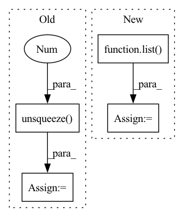

Pattern ID :10744
Before Change
trailing_shape = [-1] * ntrailing
if ndim == ntrailing:
// insert dims for group and time:
tensor = tensor.unsqueeze(0 ) .expand(num_groups, *trailing_shape)
tensor = tensor.unsqueeze(1).expand(-1, num_times, *trailing_shape)
elif ndim == ntrailing + 1:
// if we"re only missing one dim and the first and last dims match, assume the time dim is singleton.
if tensor.shape[0] == num_groups:After Change
:param trailing_dim: Tuple with ints for trailing dim shape.
:return: A tensor with shape (num_groups, num_times, *trailing_dim).
trailing_dim = list( trailing_dim)
ntrailing = len(trailing_dim)
if list(tensor.shape[-ntrailing:]) != trailing_dim:
raise ValueError(f"Expected `x.shape[-{ntrailing}:]` to be {trailing_dim}, got {tensor.shape[-ntrailing:]}")In pattern: SUPERPATTERN
Frequency: 3
Non-data size: 4
Instances Fragment ID: 37009172
Project Name: strongio/torchcast
Commit Name: 2d09dc5ccbae96aca810f788334a369574d379ae
Time: 2021-09-10
Author: jacob.dink@strong.io
File Name: torchcast/internals/utils.py
M Class Name: AnonimousClass
N Class Name: AnonimousClass
M Method Name: validate_gt_shape(4)
N Method Name: validate_gt_shape(4)
M Parent Class:
N Parent Class:
M File Name: torchcast/internals/utils.py
N File Name: torchcast/internals/utils.py
M Start Line: 78
M End Line: 95
N Start Line: 78
N End Line: 95
Before Change
if log_det.dim() == 0:
log_det = log_det.unsqueeze(0)
if log_det.dim() == 1:
log_det = log_det.unsqueeze(1 )
return z_, log_det
After Change
* self.w / torch.sum(self.w ** 2)
dims = [-1] + (u.dim() - 1) * [1]
u = a.reshape(*dims) * u
inner_ = torch.sum(self.w * u, list( range(1, self.w.dim())) )
z_ = z - u * (lin / (1 + inner_)).reshape(*dims)
log_det = -torch.log(torch.abs(1 + inner_))
return z_, log_det
Fragment ID: 37009156
Project Name: vincentstimper/normalizing-flows
Commit Name: a889154fde455dbf8adddd8da2f0b786a0fe0d8e
Time: 2022-11-09
Author: vincent.stimper@gmail.com
File Name: normflows/flows/planar.py
M Class Name: Planar
N Class Name: Planar
M Method Name: inverse(2)
N Method Name: inverse(2)
M Parent Class: Flow
N Parent Class: Flow
M File Name: normflows/flows/planar.py
N File Name: normflows/flows/planar.py
M Start Line: 75
M End Line: 92
N Start Line: 68
N End Line: 79
Before Change
if log_det.dim() == 0:
log_det = log_det.unsqueeze(0)
if log_det.dim() == 1:
log_det = log_det.unsqueeze(1 )
return z_, log_det
After Change
* self.w / torch.sum(self.w ** 2)
dims = [-1] + (u.dim() - 1) * [1]
u = a.reshape(*dims) * u
inner_ = torch.sum(self.w * u, list( range(1, self.w.dim())) )
z_ = z - u * (lin / (1 + inner_)).reshape(*dims)
log_det = -torch.log(torch.abs(1 + inner_))
return z_, log_det
Fragment ID: 37009154
Project Name: vincentstimper/normalizing-flows
Commit Name: 2e3c8bac852694af68f42ff283b2d834aa19bdb9
Time: 2022-12-19
Author: vincent.stimper@gmail.com
File Name: normflows/flows/planar.py
M Class Name: Planar
N Class Name: Planar
M Method Name: inverse(2)
N Method Name: inverse(2)
M Parent Class: Flow
N Parent Class: Flow
M File Name: normflows/flows/planar.py
N File Name: normflows/flows/planar.py
M Start Line: 75
M End Line: 92
N Start Line: 69
N End Line: 80